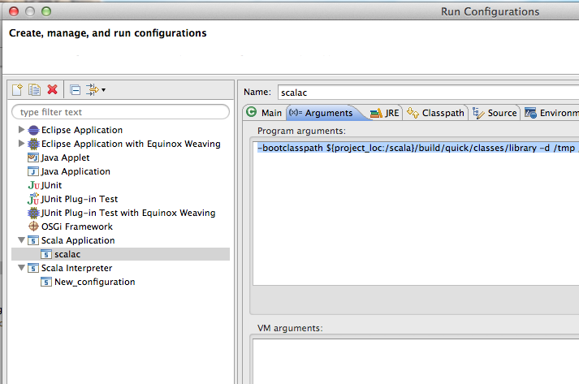

Setup and use the Scalac project with the Scala IDE
Disclaimer
The Scala IDE is, as far as we know, the only project built every night on top of the lastest nightly build of the Scala compiler. As such, you are bound to be the first to step on compiler bugs. Overall, the experience may not be that of a production-ready IDE. Please report issues that you see, or even better, attempt a fix! The whole Scala community will benefit!
What is in this guide?
This guide will show you how to configure Eclipse and your workspace for development work on the Scala compiler.
Prerequisites
Eclipse 4.4 (Luna) with a very recent Scala IDE for Scala 2.11 installed (update site: http://scala-ide.org/download/nightly.html).
Check the getting started page for instructions on how to install Scala IDE.
A basic knowledge of the Eclipse user interface is required.
Setting up Eclipse
In order to build the Scala compiler inside Eclipse, you need to make sure Eclipse runs with enough heap. We recommend at least 2GB, but be generous if you can. The detailed instructions on how to do that can be found in advanced setup
Note
If you have an older version of the Scala IDE plugin, you may run into trouble when updating to the latest nightly. Frequent changes in the compiler version numbering scheme may confuse Eclipse, and keep an older version of the compiler bundle that doesn’t match the IDE. To make sure things run smoothly, you can uninstall the previous version. There is a command line tool for doing that without firing up Eclipse.
Setting up the Eclipse project
- Clone the Scala repository
git clone git://github.com/scala/scala.git
- Pull the binary dependencies:
./pull-binary-libs.sh
- Import the project in Eclipse (
File → Import Existing Projects into Workspace) Navigate to src/eclipse. Check all projects and click ok.
You should see at least the following projects in your workspace:
- asm
- continuations-library
- reflect
- scala-library
- scala-compiler
If you work on a version of the scala compiler older than 2.10.0, you may also find here the old fjbg project (an older bytecode generator backend).
Before you go on, you need to follow the steps described in the README.md on the Scala website. Come back once you are done.
Using Eclipse for compiler development
Now you are ready to start using Eclipse on the Scala compiler itself. Eclipse works by always keeping the binaries up to date, building each time you save a file. Since the compiler is such a large project, and has intricate dependencies, building may take a long time even for small changes. We suggest you switch off Project → Build Automatically and build explicitly (CMD-B).
The builder inside Eclipse is based on Sbt, which is correct but conservative. The Scala IDE has a different builder that is much more aggressive in tracking dependencies, but which may sometimes be incorrect. You can enable it on the Build Manager page on Scala Compiler properties.
Note
Mac OS Users: the default encoding for the JVM (and picked up by Eclipse) is MacRoman. To change the encoding to UTF-8 you have to go to Eclipse Preferences → General → Workspace and choose the correct Text File Encoding.
Launching and Debugging scalac
Since the output directories are set to the default ant build directories, all the runner scripts work out of the box. If you built the project, you can run build/quick/bin/scalac on the command line, and it will pick your changes. However, the interesting part is being able to use the Eclipse debugger.
To launch scalac from Eclipse you need to create a Run Configuration, from Run → Run Configurations. Choose Scala Application and set the main class to scala.tools.nsc.Main. On the Arguments page, you need to explicitly set the path to the Scala library (that is what the runner script does for you on the command line):
-bootclasspath ${SCALA_BASEDIR}/build/quick/classes/library -d /tmp /Users/dragos/sandbox/bugs/ticket3429.scala
The run configuration should look like this:
Now you can launch the scala compiler, by choosing either Run or Debug from the menu. You can set breakpoints and step through Scala code just as you’d expect.
Cheat sheet
On our shortcuts page, you will find a collection of the shortcuts used the most in daily development. Hopefully they will be helpful for others.
If you are new to Eclipse, you should have a look at the getting started guide and watch the screencast.
Swapping the Scala compiler inside Eclipse (risky)
The Scala plugin packages a Scala compiler and library (since you are reading this, it’s most probably the nightly version of master). There may be times when you’d like to change it for your own version: say, you are developing a new feature that has not yet been included in Scala master, or you fixed a bug and can’t wait until the next nightly.
Warning
This is a risky operation. Given the tight dependency between the IDE and the compiler, you must be sure you are swapping two binary-compatible versions of the compiler. This may not work if the plugin was built against a much older version of scalac than the one you are replacing it with.
If you’re still here, go ahead and use the update-scala.sh script. Point it to your locally built scala, for instance build/pack.
$ update-scala.sh --eclipse-dir /Applications/eclipse update build/pack
If you run into trouble, the safest way out is to uninstall the plugin and re-install it. You can do that on the command line using the eclipse-director.sh script.
$ eclipse-director.sh --eclipse-dir /Applications/eclipse uninstall
Unnstalling..
Uninstalling org.scala-ide.sdt.feature.feature.group 2.1.0.nightly-2_10-201203020544-24a4734.
!SESSION 2012-03-02 15:27:37.712 -----------------------------------------------
Separating Eclipse installation from workspace
In order to have an Eclipse installation more resilient to update/installation issues one can easily separate the main Eclipse installation from the specific configuration. We will make the main Eclipse installation read-only to be absolutely sure that nothing interferes with it. The whole configuration will be placed by Eclipse in ${HOME}/eclipse-conf
$ mkdir /opt/eclipse-3.7.1
unzip the contents of the original eclipse installation to this directory
make the whole directory read-only
$ mkdir ${HOME}/eclipse-conf
$ mv /opt/eclipse-3.7.1/eclipse.ini ${HOME}/eclipse-conf/eclipse.ini
$ mkdir ${HOME}/eclipse-workspace
$ mkdir ${HOME}/eclipse-conf/configuration
With that setup in place you can start eclipse with the following command (we recommend creating a shell script for it or putting it in .desktop under Linux):
$ /opt/eclipse-3.7.1/eclipse
--launcher.ini ${HOME}/eclipse-conf/eclipse.ini
-data ${HOME}/eclipse-workspace
-configuration ${HOME}/eclipse-conf/configuration
-clean
That will install all the plugins, features and specific configuration under the ${HOME}/eclipse-conf directory, so if you encounter any errors after installation/update of the plugin, you can easilly purge the invalid data by simply cleaning up the directory (Eclipse sometimes caches installation details so it may not be so easy to clean things up in a standard setup).
Remember to be consistent when changing the directories names in the above configuration.
Feedback
This guide is managed through in the Scala IDE documentation project on github. Please use github tickets and pull requests system for feedback.
Iulian Dragos - @jaguarul
based on a document created by Grzegorz Kossakowski - @gkossakowski and improved by Vlad Ureche, and input from Hubert Plociniczak and Nada Amin - @nadamin.